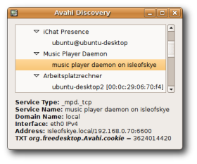

Avahi
Ausbaufähige Anleitung
Dieser Anleitung fehlen noch einige Informationen. Wenn Du etwas verbessern kannst, dann editiere den Beitrag, um die Qualität des Wikis noch weiter zu verbessern.
Anmerkung: Die Hinweise zu den Anwendungen könnten aktualisiert werden. Siehe auch die Diskussion zum Thema.
Dieser Artikel wurde für die folgenden Ubuntu-Versionen getestet:
Ubuntu 16.04 Xenial Xerus
Ubuntu 14.04 Trusty Tahr
Zum Verständnis dieses Artikels sind folgende Seiten hilfreich:
Avahi  ist eine freie Implementation von Zeroconf, einer Technik zur Vernetzung von Geräten in einem lokalen Netzwerk, ohne dass diese konfiguriert werden müssen. So ist es möglich, zwei Rechner über ein Netzwerkkabel zu verbinden und sofort Daten austauschen zu können. Dazu brauchen keine festen IP-Adressen eingestellt zu werden.
ist eine freie Implementation von Zeroconf, einer Technik zur Vernetzung von Geräten in einem lokalen Netzwerk, ohne dass diese konfiguriert werden müssen. So ist es möglich, zwei Rechner über ein Netzwerkkabel zu verbinden und sofort Daten austauschen zu können. Dazu brauchen keine festen IP-Adressen eingestellt zu werden.
Ziel ist es, lokale Netzwerke aufzubauen, die "einfach" funktionieren, d.h. ohne den Einsatz von Diensten wie DHCP oder DNS oder gar einer manuellen Konfiguration von IP-Adressen sollen sich Rechner im Netzwerk untereinander ansprechen und ihre Dienste nutzen können. So können einige Instant Messaging-Programme in einem LAN miteinander kommunizieren, ohne dass sie dazu einen Server brauchen, über den die Kommunikation läuft. Dasselbe gilt für VoIP, also Telefonieren (Audio- oder Videogespräche) im Netzwerk bzw. Internet.
Ein anderes beliebtes Beispiel ist die Freigabe von Musikbibliotheken im lokalen Netzwerk. So kann man die Musiksammlung eines Rechners auf einem anderen nutzen, ohne dass man sich mit Dateifreigaben beschäftigen muss. Letztendlich soll es auch möglich sein, Dateien und Verzeichnisse freizugeben.
Installation¶
Avahi ist unter Ubuntu von Haus aus installiert. Sollte dies nicht der Fall sein, kann man den Dienst über das folgende Paket installieren [1] werden:
avahi-daemon, universe
Dienst steuern¶
Konfiguration¶
Avahi wird über die Datei /etc/avahi/avahi-daemon.conf konfiguriert [3]. Diese Datei ist noch sehr wenig kommentiert. Daher findet man wenig Details zu den einzelnen Optionen. Zahlreiche Informationen finden sich jedoch in der ManPage zu avahi-daemon.conf.
Publishing¶
Avahi kann Netzwerkdienste im lokalen Netz ankündigen, wie es Windowsrechner und Samba Server tun: Im den Dateimanagern erscheinen dann die Zugriffsmöglichkeiten - z.B. über sftp.
Will man anderen Nutzern ermöglichen, einen sftp Dienst im Netz zu finden so muß die Konfigurationsdatei für sftp-ssh in /etc/avahi/services angelegt werden:
sudo cp /usr/share/doc/avahi-daemon/examples/sftp-ssh.service /etc/avahi/services
Zusätzliche Konfigurationsmöglichkeiten sind Standard-Kennung und Verzeichnis:
<?xml version="1.0" standalone='no'?>
<!DOCTYPE service-group SYSTEM "avahi-service.dtd">
<service-group>
<name replace-wildcards="yes">%h</name>
<service>
<type>_sftp-ssh._tcp</type>
<port>22</port>
<txt-record>path=/home/benutzer/</txt-record>
<txt-record>u=benutzer</txt-record>
</service>
</service-group>Wer nicht möchte, dass Avahi Dienste in das lokale Netzwerk publiziert, kann diese Funktion deaktivieren. Dadurch ist es weiterhin möglich, die per Avahi annoncierten Dienste anderer Rechner zu benutzen, ohne selbst als Dienst zu erscheinen. Über die Option:
disable-publishing=yes
wird Avahi fast ganz deaktiviert, selbst die lokale Namensauflösung funktioniert dadurch nicht mehr. Das Durchstöbern des Netzwerks nach Avahi-Diensten ist jedoch weiterhin möglich. Wer weiterhin die Namensauflösung über .local nutzen möchte, kann alternativ über
disable-user-service-publishing=yes
das Veröffentlichen weiterer Dienste unterbinden.
Avahi im Netzwerk¶
Lokale Namensauflösung¶
Avahi dient unter anderem der Namensauflösung im lokalen Netzwerk. Ohne dass ein DNS-Server im Netzwerk existiert oder IP-Adressen über DHCP oder manuell zugewiesen wurden, können Rechner über ihren Rechnernamen angesprochen werden. Dazu wird ein .local an den Rechnernamen gehängt, also beispielsweise rechnername.local. Jeder Dienst des Rechners kann dann über diesen Namen angesprochen werden. Die Namensauflösung über Avahi wird nur bei den Desktop-Installationen von Ubuntu installiert. Bei einem Ubuntu-Server lässt sich die Funktionalität über das Paket
libnss-mdns
 mit apturl
mit apturl
Paketliste zum Kopieren:
sudo apt-get install libnss-mdns
sudo aptitude install libnss-mdns
nachinstallieren. Danach kann man über
ping rechnername.local
einen Rechner anpingen oder andere Netzwerkdienste benutzen:
PING rechnername.local (192.168.0.1) 56(84) bytes of data. 64 bytes from rechnername (192.168.0.1): icmp_seq=1 ttl=64 time=0.229 ms 64 bytes from rechnername (192.168.0.1): icmp_seq=2 ttl=64 time=0.259 ms ...
MultiCast-Probleme¶
Manche Netzwerkkarten lassen so genannte Multicast-Pakete fallen anstatt sie weiterzuleiten. Dies hat zur Folge, dass Avahi nicht funktioniert. Sollte Avahi - z.B. die Namensauflösung per "rechnername.local" - nicht funktionieren, so kann ein
# Allgemein sudo ifconfig <interface> allmulti # Beispiel sudo ifconfig eth0 allmulti
helfen.
Avahi und Netzwerkports¶
Damit Avahi andere Rechner findet und der eigene Rechner gefunden werden kann, öffnet Avahi den Netzwerk-Port 5353 sowie einen weiteren Port im Bereich 32768 bis 61000. Dieses kann man mittels des Befehls [2]
sudo netstat -tulpen | grep avahi
am eigenen Rechner feststellen:
udp 0 0 0.0.0.0:5353 0.0.0.0:* 104 4279 758/avahi-daemon: r udp 0 0 0.0.0.0:41339 0.0.0.0:* 104 4280 758/avahi-daemon: r
Hat man keine Verwendung für Avahi, so kann man den Dienst deaktivieren. Dazu erstellt man eine Sicherungskopie der Datei /etc/init/avahi-daemon.conf und entfernt sie dann mit Root-Rechten.
Experten-Info:
Avahi beachtet grundsätzlich nur Verbindungen aus dem lokalen Netzwerk. Hängt der Rechner beispielsweise über ein DSL-Modem direkt im Internet, so braucht man keine Angst zu haben, dass Avahi Dienste des Rechners im Internet publiziert.
Anwendungen¶
Avahi-Dienste entdecken¶
Man kann das Netzwerk nach Diensten durchsuchen, die über Avahi ihre Dienste im Netzwerk veröffentlichen. So erfährt man, welche Dienste im Netzwerk verfügbar sind und wenn Dienste neu gefunden wurden.
Avahi Zeroconf Browser¶

Avahi-Discover ist eine kleine Anwendung, die das Netzwerk durchsucht. Die Ergebnisse werden in einer Baumansicht dargestellt. Klick man auf einen Dienst, so erhält man weitere Informationen zu diesem. Avahi-Discover kann über die offiziellen Paketquellen installiert werden:
avahi-discover (universe)
mit apturl
Paketliste zum Kopieren:
sudo apt-get install avahi-discover
sudo aptitude install avahi-discover
Nach der Installation kann man das Programm bei Ubuntu-Varianten mit einem Anwendungsmenü über "System -> Avahi Zeroconf Browser" starten.
Avahi per Kommandozeile¶
Nützliche Anwendungen enthält das Paket
avahi-utils
mit apturl
Paketliste zum Kopieren:
sudo apt-get install avahi-utils
sudo aptitude install avahi-utils
Es enthält zum Beispiel die Kommandos "avahi-browse", "avahi-publish" und "avahi-resolve". Näheres dazu findet man in den betreffenden Manpages.
Anwendungen¶
Es gibt eine Reihe von Anwendungen, die bereits Funktionen von Avahi nutzen können. Die Tabelle soll diese Programme aufführen und grob die Funktionsweise im Zusammenhang mit Avahi erklären.
| Anwendung | Wie die Avahi Funktion aktivieren | getestet mit |
| Banshee | Banshee kann DAAP-Musikfreigaben von Rhythmbox oder iTunes einbinden und die eigene Musik freigeben, wenn das PlugIn "Musik Freigabe" aktiviert ist | Ubuntu 8.04 |
| Epiphany | Befindet sich im Netzwerk ein Webserver, der für Avahi konfiguriert ist, so erscheint dieser automatisch unter "Lesezeichen -> Lokale Seiten". | Ubuntu 6.06 |
| Exaile | Exaile kann mit Hilfe eines Plugins auf DAAP-Dienste zugreifen | ? |
| Ekiga | Mittels Ekiga und Avahi kann man VOIP Gespräche innerhalb eines LANs führen, ohne dass man einen Server braucht. Die neuste Version (aktuell 2.0.9) funktioniert hier stabiler also die Version, die in Ubuntu 7.04 installierbar ist. Daher sollte man diese von Hand installieren. Weitere Informationen hierzu findet man im Wiki Artikel von Ekiga. | Ubuntu 7.10 |
| Gajim | Über Gajim und Avahi ist es möglich zu chatten, ohne einen Jabber-Server im LAN zu haben. Wichtig für Gajim ist, dass Avahi so konfiguriert ist, den D-Bus zu benutzen (Siehe Konfiguration). Unter Gajim selber muss unter "Ändern -> Konten" die Option "Kontakte im LAN anzeigen" aktiviert werden. Ab Ubuntu Gutsy Gibbon 7.10 muss das Paket python-avahi (universe) installiert werden. | Ubuntu 7.04 |
| Gobby | Gobby ist ein kollaborativer Texteditor. D.h. dass mehrere Leute gleichzeitig an einem Text arbeiten können. In Gobby ist Avahi schon weitestgehend implementiert. Im LAN aktive Sitzungen werden im "Sitzung beitreten" Dialog unter "Lokales Netzwerk" angezeigt. | Ubuntu 6.06 |
| Rhythmbox | Rhythmbox kann die freigegeben Musiksammlungen anderer AudioPlayer wie iTunes oder Banshee über das Netzwerk einbinden. Dazu muss man jedoch das Plugin "DAAP-Musikverteilung" aktivieren. Dies ist von Haus aus noch nicht aktiviert. | Ubuntu 7.04 |
| Pidgin | Bei Pidgin nennt sich die Funktionalität, direkt im LAN mit anderen Instant-Messaging Client-Programmen zu "chatten", "Bonjour". Man kann sich dazu unter "Konten -> Hinzufügen -> Bonjour" ein "Konto" hinzufügen. Die Daten sind dabei frei wählbar. | Ubuntu 16.04 |
| Krfb/Krdc | Die Desktopfreigabe unter KDE wird über Avahi im Netzwerk bekannt gemacht. | ? |
| Amarok | Amarok lässt sich als Client der DAAP-Musikverteilung einrichten. Dazu unter Media-Player ein Gerät einrichten, bei dem als Typ "Musikverteilung" ausgewählt wird. Als Server kann Amarok aber nicht fungieren, hier ist mt-daap in den Gutsy-Quellen. Nach der Installation von mt-daap ist der Server über avahi im gesamten Netzwerk veröffentlicht. Das Konfigurationspanel öffnet über den Browser beim Anklicken des Dienstes, Benutzername ist dann "admin" und das voreingestellte Passwort ist "mt-daapd" | ? |
Avahi und Microsoft Windows¶
Apple hat für Avahi/Zeroconf (bei Apple Bonjour genannt) einen Client für Microsoft Windows geschrieben. Nach Installation des Clients funktioniert beispielsweise die Auflösung lokaler Rechnernamen über rechnername.local. Zusätzlich wird in die Werkzeugleiste des Internet Explorers eine Schaltfläche eingeblendet, über die sich die im lokalen Netzwerk vorhandenen Webserver anzeigen lassen.
Beispiel¶
Innerhalb eines Netzwerkes kann man dank Avahi plattformunabhängig chatten und (teilweise auch) Dateien versenden. Instant Messenger wie Pidgin und Empathy oder auch iChat sowie Adium (beide Mac OS X) unterstützen diese Funktion. Einfach auf dem Rechner z.B. Pidgin öffnen und unter "Account -> Hinzufügen -> Protocol:Bonjour" auswählen. Den bevorzugten Benutzernamen wählen und fertig. Jetzt kann man von allen anderen Computern innerhalb des selben Netzwerks (LAN) gesehen und angeschrieben werden. Allerdings können Probleme mit IPv6  auftreten.
auftreten.
Hinweis:
Avahi zusammen mit mDNS löst im lokalen Netzwerk auch Rechnernamen zu IP-Adressen und umgekehrt auf. Daraus können sich auch Probleme ergeben. Es ist darauf zu achten, daß die Namen aller Rechner im lokalen Netzwerk eindeutig sind, d.h. nicht zwei Rechner den gleichen "hostname" besitzen (s. /etc/hostname).
Ebenso ist es problematisch, wenn zwei Rechner (mit unterschiedlichem Namen) im lokalen Netzwerk die gleiche IP-Adresse haben. Das ist zwar unter normalen Umständen nicht der Fall, außer man hat die wesentlichen Grundregeln bei der Konfiguration des Netzwerks mißachtet. Es gibt aber hier speziell im Zusammenhang mit Avahi eine nicht gleich offensichtliche Falle. Diese äußert sich dann darin, daß die Log-Dateien (syslog und daemon.log) aller (Linux)-Rechner im Netzwerk zahlreiche Einträge dieser Art enthalten:
pp avahi-daemon[1963]: Invalid legacy unicast query packet. ... pp avahi-daemon[1963]: Received response from host 192.168.xxx.yyy with invalid source port 39506 on interface 'eth0.0' ...
Dies passiert, wenn man ein Linux-System in einer VM (z.B. VirtualBox) betreibt und das Netzwerkinterface für die VM auf "NAT-networking" konfiguriert hat. Dann erscheint nämlich das Gastsystem in der VM nach außen im Netzwerk mit der IP-Adresse des Hosts! Für alle Rechner im Netzwerk gibt es nun 2 Avahi-Daemonen mit dergleichen IP. Dies führt - auch in den Logs des Hosts auf dem die VM läuft - zu den genannten Fehlermeldungen. Da dies auch NAS-Systeme (die meist unter Linux laufen) betrifft, wird deren Festplatte beim Starten einer so konfigurierten VM auf einem Rechner deren Festplatte hochfahren, um die Log-Einträge zu schreiben.
Die Lösung ist hier ganz einfach: das Netzwerk-Interface der VM (statt auf NAT) auf "bridged networking" zu konfigurieren. Wer das aus bestimmten Gründen nicht will, muß Avahi in den Gastsystemen de-aktivieren.
Problembehebung¶
Datenübertragung wird abgebrochen¶
Kommt es bei der Übertragung von Daten zu Abbrüchen direkt zu Beginn bzw. beginnt die Datenübertragung erst gar nicht, dann kann die Deaktivierung von IPv6 in der Kofigurationsdatei etc/avahi/avahi-daemon.conf Abhilfe schaffen. Dazu ändert man hier den Eintrag von use-ipv6=yes auf use-ipv6=no.
Links¶
Verwendung von Avahi im Heimnetzwerk
- Blogbeitrag, 02/2009Walk of Fame
- Artikel im Linux Magazin zu Avahi/Zeroconf, 03/2006
- Erstellt mit Inyoka
-
 2004 – 2017 ubuntuusers.de • Einige Rechte vorbehalten
2004 – 2017 ubuntuusers.de • Einige Rechte vorbehalten
Lizenz • Kontakt • Datenschutz • Impressum • Serverstatus -
Serverhousing gespendet von